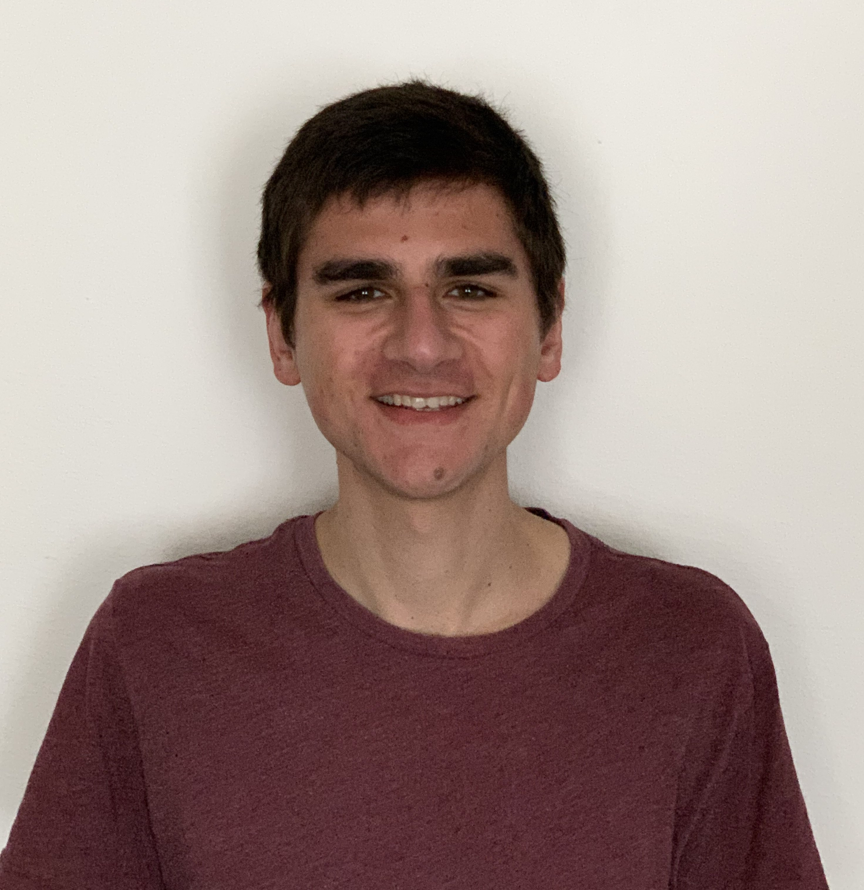

|  |
Jack Kosaianjkosaian at cs.cmu.edu[LinkedIn] I began working at NVIDIA on CUTLASS in October of 2022. I completed a Ph.D. in the Computer Science Department at Carnegie Mellon University, where I was fortunate to work with Rashmi Vinayak as part of the Parallel Data Lab.
Prior to graduate school, I was an undergraduate at the University of Michigan, where I worked with Mosharaf Chowdhury. |
I have been fortunate to be a teaching assistant for the following courses: